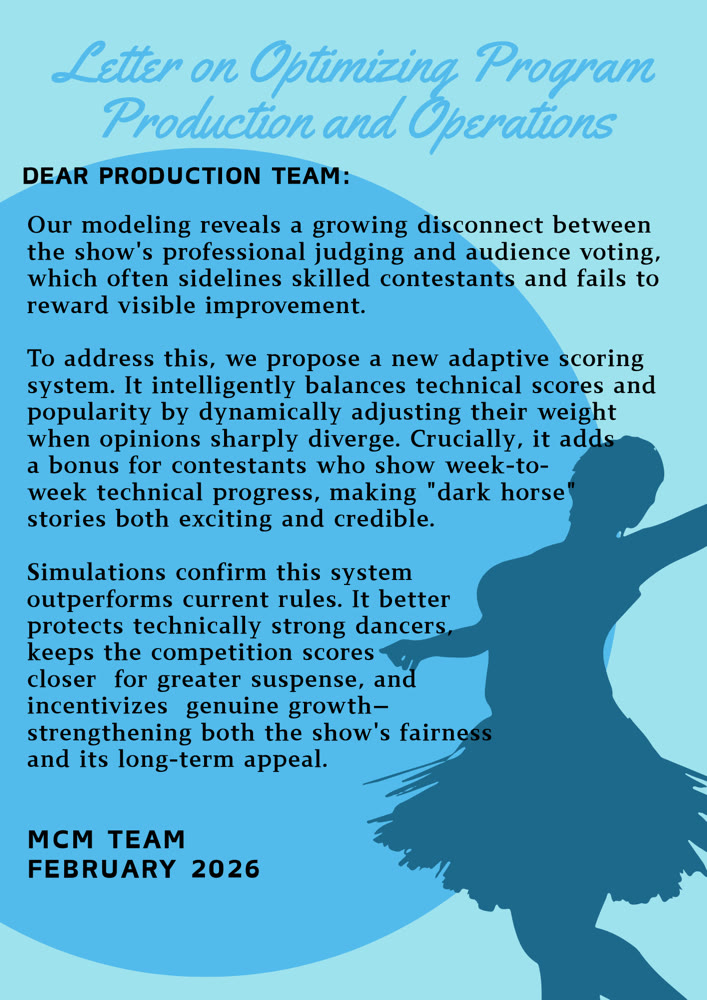
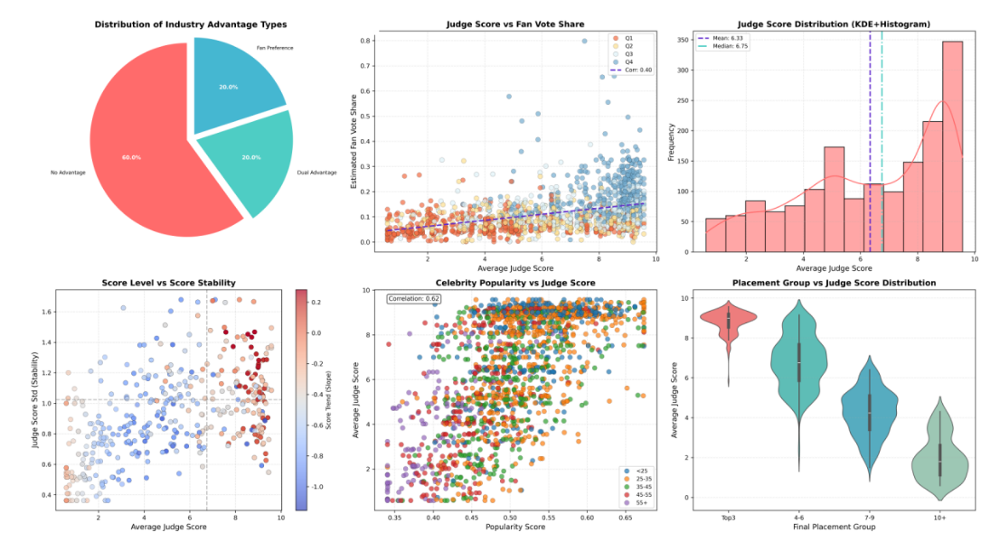
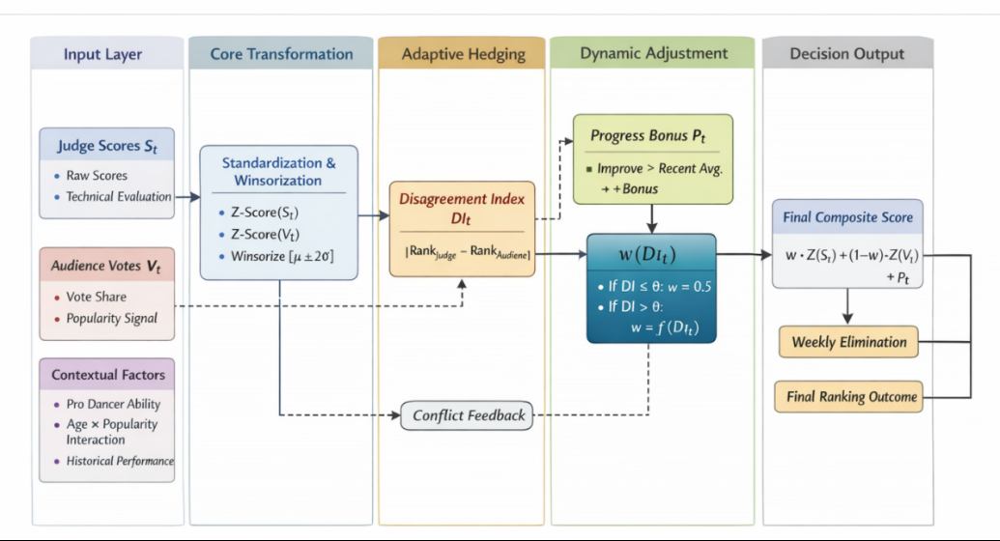

MCM/ICM 2026 · Problem C
Math Modeling Competitions
Contest work across MCM/ICM and provincial competitions. The 2026 paper is the one that took the longest: the fan vote on Dancing with the Stars is never published, so it had to be reconstructed before anything else could be asked.

Figure 2 of the submitted paper — the whole study on one page: inputs, the four estimators, the rule-analysis layer, and the optimisation layer that produces a replacement voting system. Tap the figure to open it full size.
Reconstructing a vote nobody publishes
Adaptive Voting Mechanism for “Dancing with the Stars” Based on Multi-Model Simulation — 24 pages, four sub-problems, one proposed system. Written for the 2026 MCM/ICM, Problem C.
The show has run 34 seasons and has combined judges’ scores with viewers’ votes in two different ways: a rank-based rule (seasons 1–2 and 28–34) and a percentage-based one (seasons 3–27). After several seasons in which low-scoring contestants survived on fan support, season 28 added a wrinkle — the judges pick one of the bottom two couples to send home.
Only the weekly elimination was ever published, never the vote shares. So the first job was to work backwards: perturb the unknown shares inside the region that is still consistent with who went home, sample that region with a Dirichlet draw, and fuse the samples around a consensus centre. Once a plausible vote history exists, the two rules can be replayed against each other, the drivers on each side can be estimated, and a replacement system can be simulated rather than argued for.
The paper keeps four questions apart on purpose. Estimating the vote is a feasibility problem, comparing the rules is a counterfactual one, explaining the two tracks is an inference problem, and designing a better rule is a search over weights — each needed its own model, and each is reported with its own numbers.

Four questions, four models
The headline numbers are the ones the paper reports, not rounded up.
01 · Estimation
Recover the fan vote
Perturbation and Dirichlet sampling over the feasible set, fused at a consensus centre; consistency is then measured week by week and contestant by contestant.
100% of 186 eliminations reproduced · 98.4% rank agreement · σ 0.018 across resamples
02 · Comparison
Put the two rules side by side
Both rules replayed over every season, with Spearman correlation, an ANOVA and a divergence index to separate what each mechanism actually rewards.
13.44% of weeks and 55.88% of seasons change outcome · audience weight 0.922 vs 0.498 · the judges’ bottom-two saves only 15–16% of extreme cases
03 · Inference
What each side actually rewards
A mixed-effects panel for the judges, a dual-track verification for the fans, and a causal model for the professional partner.
judges: stability and trend · fans: popularity, with technical score at ρ = −0.113 · Val Chmerkovskiy +42.4%, Corky Ballas −51.7%
04 · Design
Propose a rule that hedges
Z-score standardisation, weights that loosen when the two sides disagree, and a bonus for week-on-week technical progress.
unjust-elimination rate 0.022 · dark-horse survival 0.589 · competition intensity 0.454
What the data looks like
Six panels cut from the paper’s analysis of the reconstructed vote history — who arrives with an advantage, how far apart the two tracks already are, and where the score actually sends people.

Who arrives with an advantage
60% of contestants have neither an industry nor a fan base behind them; the remaining 40% split evenly between a fan preference and both advantages at once.
Two tracks, not one
Judge score and estimated fan share correlate at 0.40 — related, but nowhere near the same ranking. Popularity and judge score correlate at 0.62, and scores bunch up high (mean 6.33, median 6.75), which is exactly the regime where a vote share decides everything.
Placement tracks the score
The violin panel steps down monotonically from the top-3 group to the 10+ group, so the judge score is not noise — it is the fan vote layered on top that reorders the middle.
How well the vote model holds
186
weeks replayed
100%
eliminations reproduced
98.4%
rank agreement with the real result
91 : 44
candidate votes per week, rank vs percentage
The last number is the one worth pausing on. Under the percentage rule a single week’s elimination history is consistent with about 44 distinct vote configurations; under the rank rule the same history admits about 91. The rank rule is therefore much harder to identify from the outside — and any claim about what it rewarded carries more uncertainty than the percentage rule does.
The system it proposes
Five layers: standardise both tracks, measure how far apart they are, let that distance set the weight, add a bonus for improvement, then decide.

The adaptive weight is the whole idea. When the two tracks roughly agree, the fixed 50/50 split stands; once the divergence index passes a threshold, the weight slides toward the judges and the popular vote loses its veto. A progress term then adds a small bonus to whoever beat their own recent average.
All five mechanisms were back-tested on the same reconstructed history with three indicators: the unjust-elimination rate (lower is better), competition intensity entropy (higher means tighter scores and more suspense) and a dark-horse survival index (higher means contestants who improve week on week stay longer).
| Mechanism | UER | HC | DHSI |
|---|---|---|---|
| Rank-based | 0.0293 | 0.4542 | 0.5853 |
| Percentage-based | 0.0122 | 0.4542 | 0.5903 |
| Judge choice, rank | 0.0269 | 0.4542 | 0.5898 |
| Judge choice, percentage | 0.0293 | 0.4542 | 0.5796 |
| Proposed system | 0.0220 | 0.4542 | 0.5885 |
Table 5 of the paper. The percentage rule still posts the lowest unjust-elimination rate — it buys that by letting popularity decide, which is the behaviour the new system deliberately gives up. Intensity is flat across all five, as it should be: none of them changes how the judges score.
Awards
| Year | Contest | Result |
|---|---|---|
| 2026 | MCM/ICM · Problem C | Successful Participant · team 2616214 |
| 2025 | MCM/ICM | National Third Prize |
| 2025 | Provincial mathematical modeling contest | Second and Third Prizes |
| 2025 | Provincial mathematics competition | Third Prize |
| 2024–2025 | Academic scholarships | Second and Third Class |